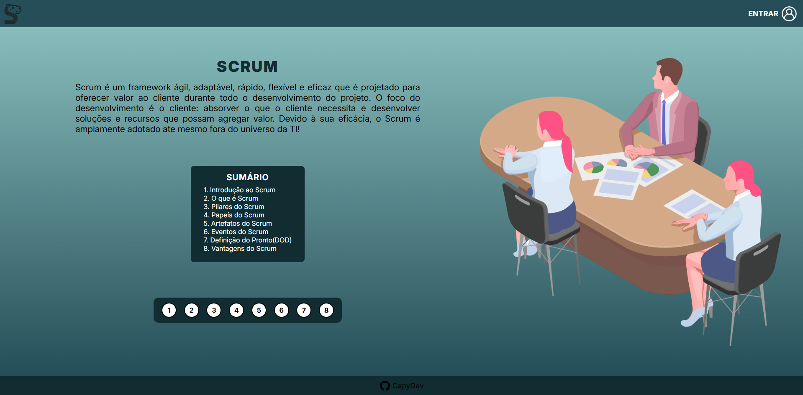
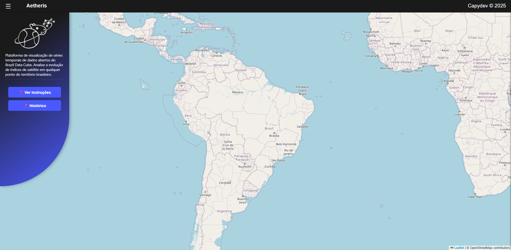
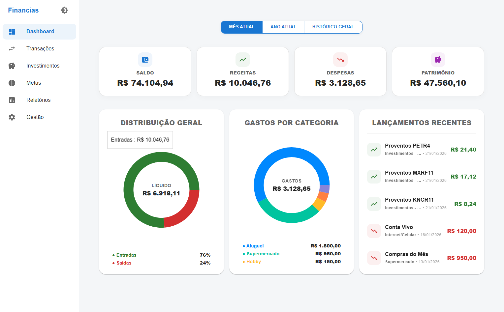
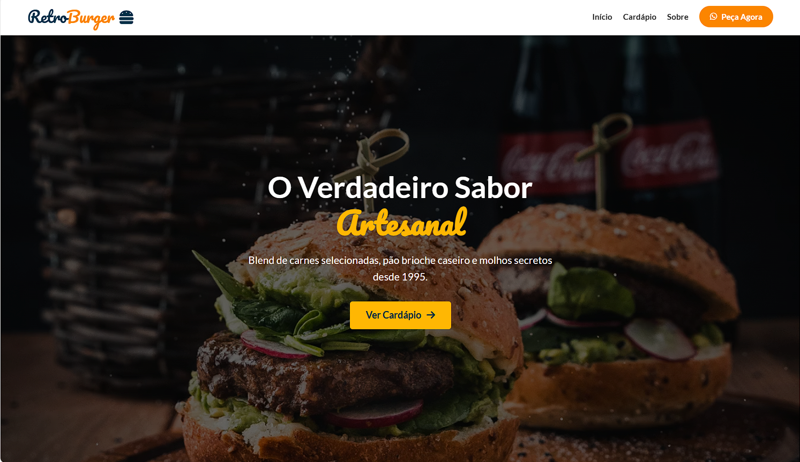
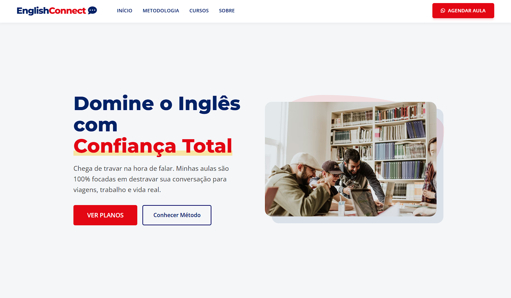
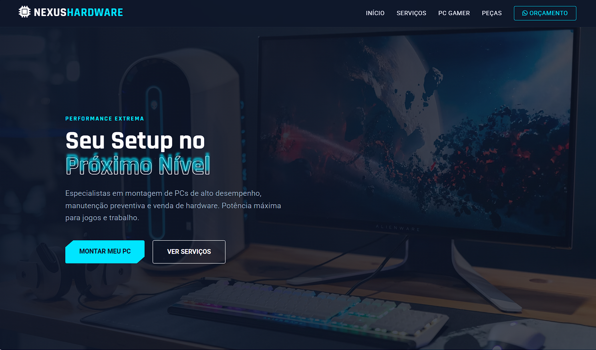
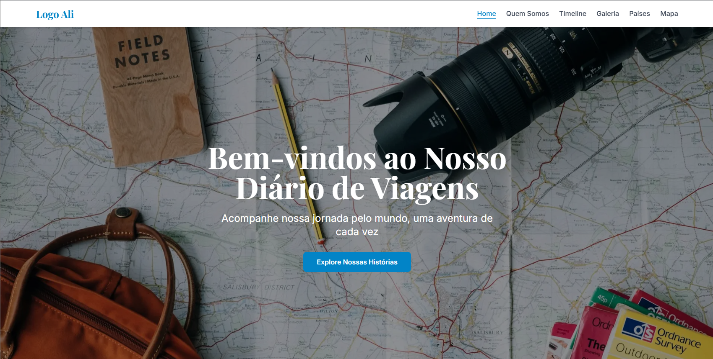

Sobre Mim
Desenvolvedor Front-End iniciante com experiências em HTML5, CSS3, JavaScript, TypeScript e React.js.
Sempre interessado pela área de tecnologia, atualmente cursando ensino superior em Desenvolvimento de Software Multiplataforma na FATEC, onde atuei como monitor da disciplina de Algoritmos e Lógica de Programação durante meu segundo e terceiro períodos.
Formação
Desenvolvimento de Software Multiplataforma
FATEC - Jacareí · 4º PeríodoCurso superior focado no desenvolvimento de sistemas para múltiplas plataformas. A formação integra engenharia de software, segurança da informação e inteligência artificial, capacitando para a gestão de projetos ágeis e a entrega de soluções tecnológicas completas e seguras.
Experiências
Monitor de Algoritmos e Lógica de Programação
FATEC - JacareíAtuação como monitor da disciplina de Algoritmos e Lógica de Programação, com foco em JavaScript e Python.
Minhas responsabilidades incluíram apoiar o entendimento dos principais conceitos abordados em sala de aula, como variáveis, estruturas de decisão, estruturas de repetição, arrays e funções, além de esclarecer dúvidas e auxiliar na resolução de exercícios práticos.
Idiomas
Habilidades
Projetos
Acadêmicos

Capy Scrum

Ignis

Aetheris
Pessoais

Controle Financeiro

Retro Burguer

English Connect

Nexus Hardware
